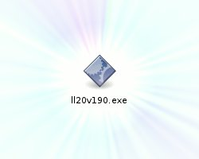
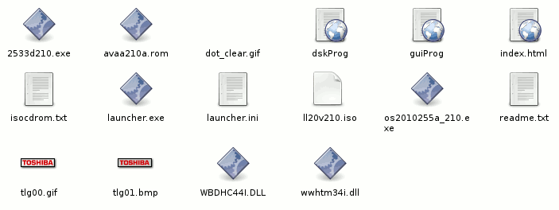

Actualización del BIOS con GRUB
El BIOS es el software que se ejecuta al encender una computadora. Es un software muy básico, que suele estar instalado en un chip en la tarjeta madre.
El fabricante del equipo de cómputo suele ofrecer actualizaciones del BIOS en su sitio web. Como la gran mayoría de los equipos siguen vendiéndose con Windows, estas actualizaciones están disponibles sólo para este sistema operativo. Quienes usamos GNU/Linux tenemos que realizar una serie de trucos técnicos para actualizar el BIOS con éxito.
El caso que documento es más complicado de resolver, ya que es para actualizar el BIOS de una Netbook; equipo donde NO disponemos de lector de floppys o CD-ROM. Pareciera que nuestra única alternativa es hacer una memoria USB booteable con el software proporcionado por el fabricante o conteniendo el FreeDOS. Pero les muestro otra: Actualizar el BIOS por medio del gestor de arranque GRUB.
ADVERTENCIA
La actualización del BIOS de una computadora es un proceso en el que se deben de tomar todas las precauciones posibles. Por ejemplo, debe tener completamente cargada la batería de su equipo portátil, así como mantenerlo conectado al cargador; de forma que se garantize que no se interrumpa el suministro eléctrico.
Tenga en cuenta de que existe el riesgo de que falle la actualización del BIOS y que provoque que el equipo quede fuera de operación.
Considere que este manual es meramente informativo y que debe de leer los pasos sugeridos por el fabricante. Si no tiene mucha experiencia en cuestiones computacionales, solicite la ayuda de un especialista en equipo de cómputo.
Procedimiento
Busque en el sitio web del fabricante de su computadora el software para hacer la actualización del BIOS. En mi caso, tengo una Toshiba NB200, así que obtengo el software del sitio web de soporte de Toshiba.


¿Y qué cree?... Sí... El archivo de actualización ll20v210.exe es un programa para Windows.
Si en su GNU/Linux tiene Wine instalado, pruebe ejecutar el archivo EXE en él y así desempacar su contenido.
Si no tiene el Wine, copie el archivo EXE a un dispositivo de almacenamiento (por ejemplo, una memoria USB) y vaya a otro equipo con Windows para que lo desempaque. Copie lo desempacado en el mismo dispositivo de almacenamiento. De regreso en GNU/Linux, copie los archivos a su disco duro.
Uno de los archivos es un readme.txt que explica:
- Cómo crear un disco de arranque (floppy, memoria USB) con la actualización.
- Cómo actualizar el BIOS desde Windows.
- Cómo crear un CD-ROM arrancable con la actualización.
Para hacer la actualización (por medio de GRUB) he fijado mi atención en el archivo ll20v210.iso, el cual es es la imagen de un CD-ROM arrancable. Suponemos que tiene dentro la actualización del BIOS.

Como root lo montamos en un directorio de nuestro GNU/Linux con el comando mount. Sustituya /home/USUARIO/ por la ruta correcta a ese archivo:
# mkdir /mnt/iso
# mount -o loop,ro /home/USUARIO/ll20v210.iso /mnt/iso
# ls /mnt/iso
El parámetro loop en indispensable para mount al montar una imagen de disco. Por otro lado, hago que se monte como sólo lectura con el parámetro ro para evitar causarle algún cambio.

Busque en el contenido del ISO algún un archivo IMG o IMA. Éste puede ser un sistema operativo compacto que al arrancar ejecutará la actualización del BIOS.
Ahora es momento de configurar GRUB para que cargue el archivo 2533d210.ima. Primero necesitamos de memdisk que viene incluido con syslinux. Instalamos syslinux en Gentoo Linux con...
# emerge syslinux
La ubicación del archivo memdisk puede variar según su distribución. En Gentoo podemos averiguar los archivos que nos instala un paquete ejecutando...
# equery files syslinux
Con el anterior comando obtengo que la ubicación es /usr/share/syslinux/memdisk
Si tiene /boot en su propia partición debemos montarla, puesto que ahí copiaremos el archivo IMG/IMA y memdisk...
# mount /boot
Copie memdisk a su directorio /boot
# cp /usr/share/syslinux/memdisk /boot/
Luego copie el archivo que suponemos es el actualizador del BIOS a /boot
# cp 2533d210.ima /boot/
Edite el archivo de configuración de GRUB. Si usa una versión anterior a GRUB 2 (en mi caso es la 0.97) basta con editar el archivo...
# nano -w /boot/grub/grub.conf
Y agregar al final es siguiente contenido. Sustituya 2533d210.ima por el nombre de su archivo IMA o IMG.
title BIOS Update
root (hd0,0)
kernel /memdisk
initrd /2533d210.ima
Si está usando GRUB 2 deberá agregar la opción con la nueva sintaxis. Según Think Wiki - BIOS Update debe agregar al archivo /boot/grub/grub.cfg lo siguiente:
menuentry "BIOS Update" {
set root=(hd0,0) #Revise que coincida con las otras opciones en grub.cfg
linux16 /boot/memdisk
initrd16 /boot/2533d210.ima
}
Conecte el cargador de su netboot o laptop y reinicie su computadora. Cuando aparezca el menú del gestor de arranque GRUB elija la opción BIOS update.